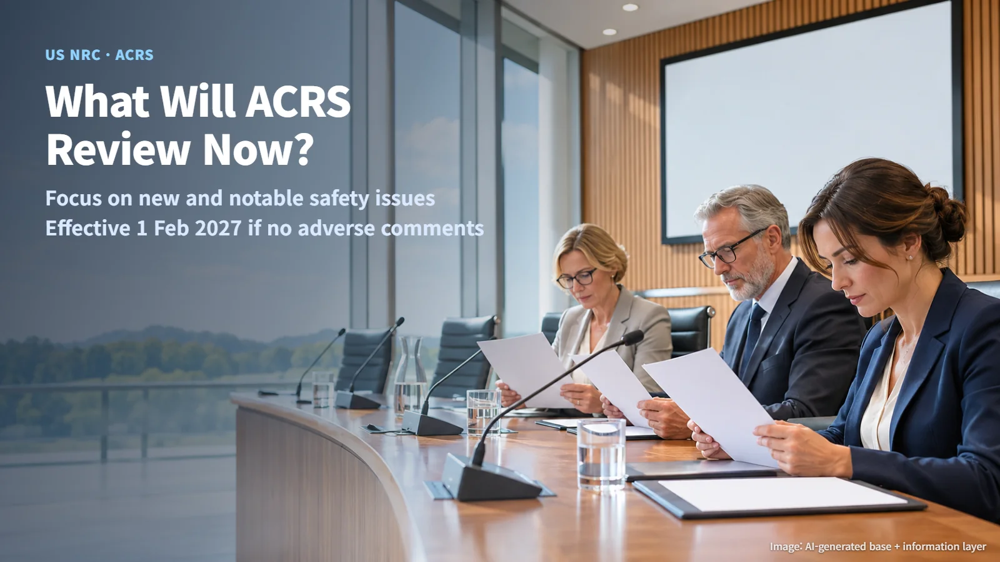
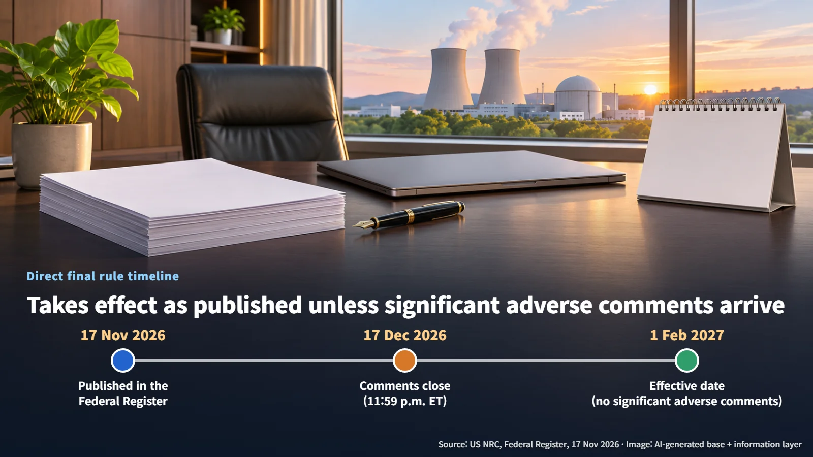
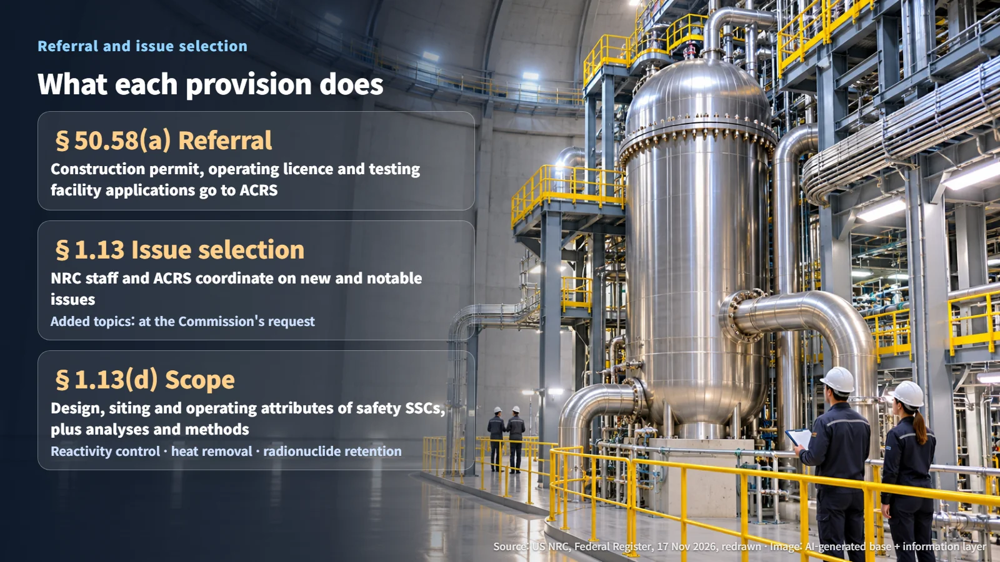
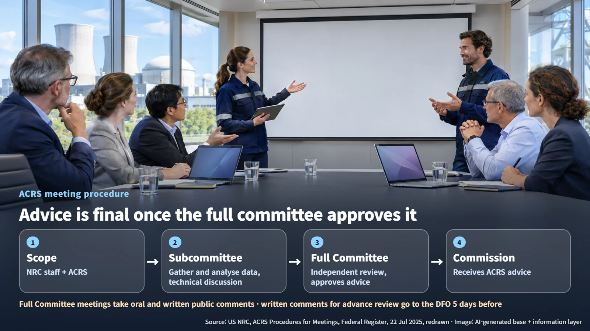

United States · Regulation · ACRS
What Will the NRC's Safety Advisory Committee Review Now? ACRS Refocuses on New and Notable Safety Issues
A direct final rule published on 17 November 2026 focuses the Advisory Committee on Reactor Safeguards on new and notable reactor safety issues. Comments close on 17 December, and the rule takes effect on 1 February 2027 if no significant adverse comments are received.
In the United States, a nuclear plant application passes through two layers of technical scrutiny. Staff reviewers at the Nuclear Regulatory Commission (NRC) examine its safety case, and an independent group of experts adds its own technical advice. That group is the Advisory Committee on Reactor Safeguards (ACRS). Established under the Atomic Energy Act as an independent technical advisory body, the ACRS sits apart from the NRC's review offices, reports directly to the Commission, and submits recommendations to it. The committee has at least 7 and at most 15 members, each serving a four-year term.
A rule published on November 17, 2026, adjusts what this committee examines in depth. Here is how the change affects referral of applications, the selection of review topics, and the material applicants put in front of reviewers.

A Direct Final Rule Published on November 17, and the Path to Effectiveness
On November 17, the NRC published a direct final rule in the Federal Register that adjusts the functions of the ACRS. A direct final rule is issued in final form from the start. If no significant adverse comments arrive during the comment period, it takes effect on the announced date. If significant adverse comments are received, the NRC may publish a withdrawal notice.
The timeline works out as follows:
- Publication (November 17) to comment deadline (December 17, 11:59 p.m. U.S. Eastern Time): 30 days
- Comment deadline to the planned effective date (February 1, 2027): 14 remaining days in December + 31 days in January + 1 day = 46 days
- Publication to effective date: 30 + 46 = roughly 76 days in total
The amendments follow Executive Order 14300 and focus the ACRS on its statutory duties, revising related provisions in 10 CFR Parts 1, 2, 50, 52, 53, and 54. The House bill passed on November 12, covered in an earlier post, moved through the legislative route in Congress. This rule follows the administrative route, with the NRC amending its own regulations. Whether the change becomes final now depends on the comments that arrive by December 17.

What the ACRS Examines in Depth: The Test for New and Notable Safety Issues
Under the revised §1.13, the NRC's review offices and the ACRS coordinate to identify "new and notable" matters of reactor safety. The ACRS can take up additional matters at the request of the Commission.
The test sits in §1.13(d). It covers new and notable attributes of design, siting, and operation linked to safety-related SSCs and to SSCs that perform functions important to safety. SSCs (structures, systems, and components) is the umbrella term for the physical equipment that makes up a plant. The scope also includes related analyses and methodologies: safety classification, accident prevention and mitigation, and the means used to demonstrate three safety functions. Reactivity control keeps the strength of the fission chain reaction in check. Heat removal carries heat away from the core. Radionuclide retention keeps radioactive material contained inside the plant.
| Category | Examples | |---|---| | Focus of in-depth review | New design, siting, and operating attributes of safety-related and safety-significant SSCs; analyses and methods that demonstrate reactivity control, heat removal, and radionuclide retention | | Examples with lower relevance to reactor safety | Some offsite emergency response, physical security, threat assessment |
(Source: US NRC, "Advisory Committee on Reactor Safeguards Functions," Federal Register, November 17, 2026, adapted)
The stated purpose is to reduce repeated review of technologies and methods that have already been examined. NRC staff continue to perform the safety review, and the burden of demonstrating safety stays with the applicant. What changes is where the independent experts spend their time: on the new parts of a design's reactor safety functions.
Applications Are Still Referred, and Issues Are Selected Separately
The change becomes clearer when viewed along two axes. The first is referral: which applications go to the ACRS. The revised §50.58(a) requires construction permit, operating license, and testing facility applications to be referred to the ACRS. The second is issue selection: which parts of those applications receive in-depth attention. After referral, the report the ACRS prepares concentrates on new and notable reactor safety matters under §1.13. Referral and issue selection are two separate procedures.

The rule's preamble also explains how ACRS review at the manufacturing license stage relates to later construction permit, operating license, and combined license stages. Design matters resolved at an earlier stage are covered by regulatory finality provisions, which protect conclusions already reached. Later applications therefore spell out which approvals they reference and under what conditions those approvals apply. Applications continue stage by stage: at the opening panel of the ANS Winter Conference in Phoenix on November 16, NRC Commissioner Douglas Weaver noted that an operating license is still required after a construction permit.
A hypothetical example from the underlying analysis shows why this linkage matters. Suppose an applicant reuses an established analysis method, but the heat removal conditions of the current design have changed. The applicant would then explain the differences in the method's range of applicability and input conditions, and propose the additional verification needed. Actual review conclusions are reached through the design-specific record. The center of gravity for review material shifts toward a clear bridge between earlier review findings and what is new from a safety standpoint.
From Subcommittee to Full Committee, and What to Watch Next
ACRS meeting procedures, published in the Federal Register on July 22, 2025, set out the flow. Subcommittees gather and analyze information and hold the technical discussions. The full committee then independently reviews the subcommittee's views. The committee's advice is established once the full committee approves it.

Full committee meetings give members of the public the opportunity to offer oral or written comments. Written comments intended for review ahead of a meeting are to be submitted to the Designated Federal Officer (DFO) at least five days before the meeting.
Three items are next on the calendar: whether significant adverse comments or a withdrawal notice follow the December 17 deadline, the rule's status on February 1, 2027, and any follow-up implementation guidance from the NRC. Once the rule takes effect, individual designs will show which issues go to the ACRS and how far earlier evaluations can be reused. Knowing where the depth of review is concentrated makes the next licensing headline much easier to read.